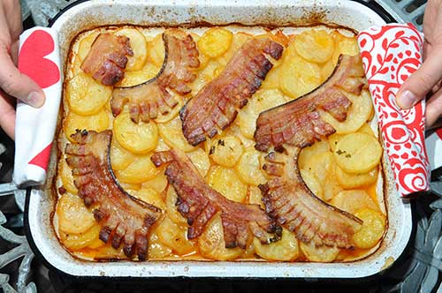
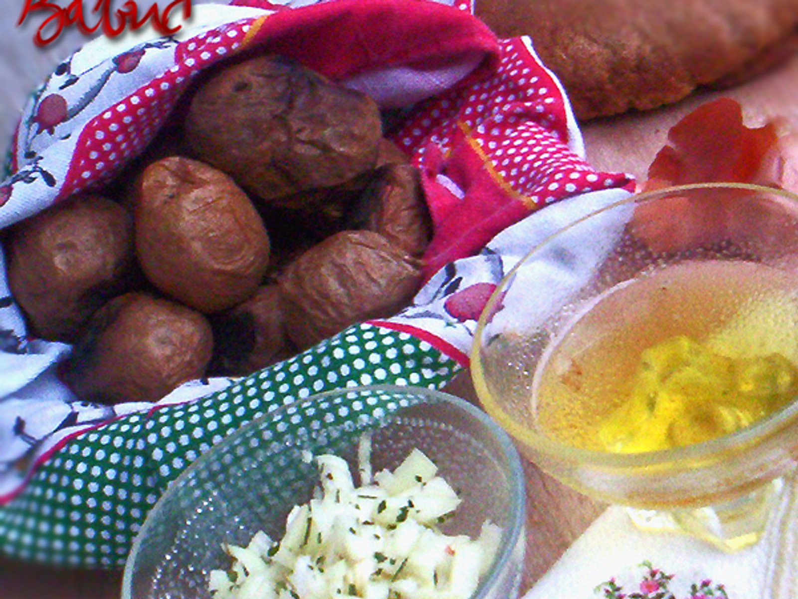

Тепсију премазати уљем и укључити рерну на 200оC. Замутити миксером брашно, јаје, млеко, шећер и со. Ту
смесу сипати у тепсију и прелити са мало уља. Пећи 30-35 минута.
Препорука: јело послужити уз јогурт.
Кромпир у тепсији

Потребни састојци:
2kg кромпира;
2 лука;
Кашичица алеве паприке;
Кашичица соли;
Кашичица зачина Ц;
Пиринач;
Сланина;
Кобасица;
Кашика масти.
Припрема:
Тепсију намазати машћу. Исецкани лук ставити на дно тепсије и преко њега ставити 3 кашике пиринча. Преко
пиринча ставити сланину и кобасице. Кромпир исецкан на кругове измешати са алевом паприком и зачинима, и
ставити у тепсију. Преко свега тога сипати шољу воде. Ставити у рерну на 200оC око сат времена.

Кромпир у чакширама
Потребни састојци:
2kg кромпира;
500g чварака;
Кашика масти.
Припрема:
Опрати кромпир и са љуском ставити да се пече. Кромпир пећи на 200оC сат времена. Чварке загрејати
на масти. Када се кромпир испече прекрије се крпом 15 минута и после тога се кромпир ољушти, помеша
са чварцима и једе. :)